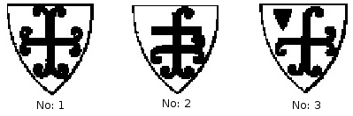

Joinville’den yaklaşık yüz yıl kadar önce, onun gibi Champagne’da doğmuş, onun gibi kalemden çok kılıç kullanmaya yatkın sert bir şövalye, adını ölümsüzleştirecek bir tarihsel anlatıyı eski Fransızca ile yazma macerasına atılıyordu. Önünde öykünebileceği hiçbir örnek, böyle bir girişimde kendisine fikir verebilecek hiçbir deneme yoktu. Koşulların zorlaması ve rastlantılar sonucunda, tıpkı Joinville gibi,
Geoffroi de Villehardouin de katıldığı büyük olayların tarihçisi olmak gibi bir yazgısı bulunduğunu hissetti. Her ikisi de işe, anlattıklarını yaşayarak koyulmuşlardı: Bu nedenle denemeleri tam birer usta işi oldu; esinlerinin ve öykülerine can katan hayatın kaynağı buydu. Birçok kitap daha yazarları hayattayken eskir ve ölür. Oysa sözünü ettiğimiz bu iki kitap eski dillerinin sert kabuğu altında tükenmeyen bir gençlik ve özgünlük cevherini koruyarak yüzyılları aşıp geldiler.
Ünü Joinville’inkine denk olmakla birlikte, Villehardouin’in kişiliğini o kadar iyi tanımıyoruz. Uzun süre, en tanınmış yayıncısı Du Cange’ın görüşleri nedeniyle, babasının Guillaume adında bir senyör olduğu düşünüldü. Kont Henri’nin (Liberal) 1163’ten 1179’a kadar çıkardığı fermanlarda Champagne mareşali unvanıyla adına rastlanan Guillaume, 1180’e doğru ölmüştü ve onun soyundan geldiği ileri sürülen meşhur oğlunun da yaşamının 1212 ile 1218 arasında sona erdiği bilinmektedir. Baba ile oğulun ölüm tarihleri arasındaki fark akla uygundu ve birbiri ardı sıra taşıdıkları mareşal unvanı miras yoluyla geçen bir fieften geliyor olmalıydı (en azından böyle sanılıyordu). Ama günümüzde, Champagne kontlarını inceleyen bilge tarihçi Bay d’Arbois de
Jubainville, “Kral” lakaplı bu Guillaume’un başka bir ailenin, Provins’li Brébant’ların kökünü oluşturduğunu ve Villehardouin’in kroniğinin birkaç yerinde adı geçen Milon le Brébant’ın atası olduğunu kanıtladı. O halde bizim büyük tarihçimizin bir soyağacı yoktur; neyse ki o, bir soyağacına gereksinim duymayanlardandır.
Büyük bir olasılıkla Troyes bölgesinin küçük Villehardouin köyünde, bazı kalıntıları hâlâ duran şatoda doğdu; ama hangi yılda doğduğu bilinmiyor. Bay d’Arbois de
Jubainville onun adına ilk kez Champagne kontesi Marie’nin her ikisi de 1185 tarihli iki fermanında rastlamıştı. O tarihte reşit olduğu kabul edilirse, en geç 1164’te doğduğu sonucuna varılabilir.
Aynı bilgin bana, Villehardouin’in olası doğum tarihi aranırken mutlaka hesaba katılması gereken bir başka olaydan da söz etti. Tarihçimizin yeğeni, Akhaia dükü
Geoffroi de Villehardouin’in oğlunun adı da Geoffroi’ydı ve babasıyla birlikte 1216’da Korinthos’a verilen bir fermanı mühürlemişti. Demek ki bu oğul reşitti ve babası olan Akhaia dükü de en az 43 yaşındaydı. O halde bu Akhaia dükünün babası, yani bizim Villehardouin’in kardeşi o tarihte en az 65’indeydi.
Hepsi bu da değil: Tarihçinin iyi bilinen mühürü, yeğeni ile yeğeninin oğlunun sözü edilen bu 1216 tarihli fermana bastıkları mühürlerle karşılaştırılınca, o sırada Villehardouin ailesinin reisinin Akhaia dükü olduğu anlaşılmaktadır, çünkü oğlu veya amcası değil, sadece o, babasından kalan armayı aynen kullanmayı sürdürmektedir ve babadan kalan armalar ancak en büyük oğuldan yürüyen aile dalının temsilcisine ait olabilir. Okuyucuya çizimlerini sunduğumuz (no: 1) bu armalar, uçları yuvarlaklaştırılmış haçlardan oluşmaktadır. Geleneklere göre, babası hayatta olduğu sürece onunla tam aynı armayı kullanamayan Akhaia dükünün oğlu ise, armasında iki türlü farklılık yapıyordu: Haçın sağ kolundan ve üst kolundan birer çember eksiltiyor, daha sonra üst kolun hemen altına yatay bir çubuk ekliyordu (no: 2). Ama tarihçi Villehardouin’in iki fermanın altına bastığı mühürlerden (biri 1202, diğeri 1207 tarihli) onun da aile armalarını değiştirdiği sonucu çıkmaktadır: O da bir yandan yeğeninin oğlu ile aynı çemberleri eksiltmekte, sonra da sağ üst köşedeki boşluğa küçük bir ekü eklemektedir (no: 3). Demek ki tarihçi, ailenin küçük oğlundan yürüyen dalını temsil ediyordu ve ağabeyinin doğum tarihi olarak 1151 civarı kabul edilirse, onun doğum tarihi de 1152 ile 1164 arasındadır. 1164 üst sınırdır, çünkü yukarıda sözü edilen 1185 tarihli belgeler bu sınırın aşılmasına olanak vermemektedir.

Champagne Kontluğu vasallarının kütüğünü yayımlayan Bay Auguste Longnon’un bana ilettiği bir metindeki veriler yukarıda sıralananlardan çok farklı değildir. Bu genç bilgin, söz konusu eseri yayımladıktan sonra, Troyes Şatosu’na bağlı vasalları gösteren ve 1172’ye doğru hazırlanmış bir liste bulmuştur. Bu listede bir Geoffroi de Villehardouin’e yer verilmektedir. Eğer bu kişi bizim tarihçimizse o zaman doğum tarihini 1150’ye, ağabeyinin doğum tarihini ise biraz daha erkene almak gerekecektir.
Ne olursa olsun 1150, Villehardouin’in yaşamöyküsünü yazanların hiçbirinin aşmaya cesaret edemediği bir sınırdır ve bunun da çok anlaşılır bir nedeni vardır. Çünkü onun anlatılarını okuyan herkes, kendisine art arda uzak ülkelerde görevler verildiğini, her savaşa fiilen katıldığını görecek ve doğal olarak, hâlâ gücünün kuvvetinin yerinde ve yaşının da savaş yorgunluklarını kaldırmaya uygun olduğunu düşünecektir. Diğer yandan silah arkadaşlarına aşıladığı güven duygusu, meclislerdeki ağırlığı, görüşmeci olarak gösterdiği beceri tam olgunluk çağında bulunduğunu da kanıtlamaktadır. Bu nedenlerden ötürü, Geoffroi de Villehardouin’in doğumunu 1150 ile 1164 arasına tarihlendirmek akla yatkın olacaktır.
Akla yatkın ya da olası durumları sergiledikten sonra, kesin ve tartışma götürmeyen gerçeklere geliyorum. 1172’de Troyes Şatosu listesinde kayıtlı vasalın o olmadığını kabul edersek, Geoffroi de Villehardouin’in en azından 1185’te reşit, 1199’da Ecry-sur-Aisne turnuvasında Haçlı Seferi’ne katılma yemini ettiğinde de 35 yaşında olduğunu hatırlatırım. Demek ki güzel konuşan bir vaizin sesine düşüncesizce kanabilecek yaşta değildi. Sağlam bir yüreğe ve aydın bir düşünceye sahip insanlar o yaşa geldiklerinde hiçbir şeyi hafife almaz ve mantıklarına başvurmadan sadece imanlarının sesine kapılıp gitmezler. Koca koca kuşakların körlemesine ve sağduyusuzca hareket ettikleri varsayılırsa, genel olarak tarihi, özel olarak da Haçlı seferlerini anlamak zorlaşır. Kuşkusuz uzak diyarlara yapılan bu seferleri hazırlayan ve insanların aklına sokan ince ince tasarlanmış siyasi hesaplar değildi; ama yine de Hıristiyan Avrupa’nın birleşik güçlerini Müslümanlara karşı silahlandıranın dinî inançla birlikte gizli uygarlık içgüdüsü olmadığını kim iddia edebilir? Hıristiyanlığın uzun çabalarının zaferle taçlandığı ve atalarımızın Doğu’da hâlâ yaşayan anılarının Fransız ismini bir şeref ve cesaret ışığıyla aydınlattığı bugün, bize bu denli güzel bir miras bırakanların anılarını karalamak pek hoş olmaz.
Mademki herkesin örtülü onayı ve itirafı ile bu Haçlı seferlerinin en ön safında Fransa’nın yürümesi ve Hıristiyan Avrupa’yı temsil etmesi gerekiyordu, bu seferlerin anılarını kendi dillerinde yaşatacak tarihçilerin de Fransa’nın bağrından çıkması son derece doğaldı. Ama Fransızca yazanların en yaşlısı, birtakım beklenmedik koşullar sonucunda, 1202’ye doğru Fransa’dan ayrılırken ulaşmayı düşündüğü Kutsal Topraklar’a varamayacaktı. Kudüs’ü fethetmek için yola çıkan bu Haçlılar, birdenbire bir zalimi tahttan indirmek ve büyük Romania [Bizans] İmparatorluğu’nu meşru sahibine geri vermek üzere Bizans’tan çağrıldıklarını öğrendiler. Geoffroi de Villehardouin’in çok haklı bir biçimde o güne dek işitilmiş en inanılmaz ve büyük maceralardan biri diye nitelediği olay budur. Kitabını son derece ilginç bir hale getiren de bu nedendir. Kutsal Topraklar’a giden Haçlılar ile ilgili elimizde pek çok anlatı bulunmasına karşın, Konstantinopolis’in fethini tüm ayrıntılarıyla anlatan neredeyse tek kişi Villehardouin’dir. Bu anlatı, Kont Riant’ın yayına hazırladığı ve Villehardouin’in çağdaşı olan Robert de Clari’nin Amiens dilinde kaleme aldığı kronikle karşılaştırıldığında bile öneminden bir şey yitirmez. Picardie’li bu kronikçi savaşın olaylarını ve ayrıntılarını yaşamış, yoksul şövalyelerin saflarında dövüşmüş, onların başarılarının tanığı ve şikâyetlerinin sözcüsü olmuştur. Seferin komutanlarının yanından hiç ayrılmayan, onların sırdaşı ve görevlisi olan, savaş meclislerine katılan Villehardouin ise, onların politikasının gizlerini öğrenmiş ve bu maceralı Haçlı Seferi’nin gerçek tarihini anlatmıştır.
Robert de Clari kadar özgün olmasa da, Dom Brial tarafından yaklaşık elli yıl önce ismi ve anlatıları tanıtıldığından beri, Geoffroi de Villehardouin’le birlikte anılmayı hak
eden bir kronikçi daha vardır. Dom Brial’e göre, Henri de Valenciennes tarihçesini sürdürdüğü Villehardouin’le çağdaş değildir. Ama tüm olayları kendi gözleriyle gördüğünü, yüksek şahsiyetlerin ve baronların tüm meclislerinde yer aldığını açıklayan Valenciennes’in bu sözlerine inanmamak mümkün müdür? Dom Brial’in kuşkularını hiç paylaşmayan Bay Buchon, Henri de Valenciennes’in acaba kendi savaşlarını anlatmaya girişen Konstantinopolis’in Latin imparatoru Henri mi olduğu sorusunu bile gündeme getirmiştir. Pek inandırıcı gözükmeyen ve kendisinin de fazla üzerinde durmadığı bu varsayımı bir kenara bırakacak olursak,
Buchon’un bu kronikte anlatılan olaylara gösterdiği güveni onayladığımızı belirtelim. Bay Paulin Paris de bu kroniğin tam gerçekliği konusunda güvence vermekte hiç duraksamaz; ancak bu tarihçenin romanesk biçimini açıklarken, önce manzum halde yazıldığını ve bir sözlü destanın (chanson de geste) parçası olduğunu ileri sürer. Ben bu kadar iddialı davranamasam da, bu eski manzum destanların akışını sık sık ağırlaştıran o uzun söylevlerin ve ayrıntılı betimlemelerin burada da karşımıza çıktığını kabul etmekle yetiniyorum. Bu tür kusurlar Henri de Valenciennes’in doğruluğunu ve içtenliğini tartışma konusu yapma hakkını vermemekle birlikte, Geoffroi de Villehardouin’in yazdığı tarihe egemen olan o soylu sadeliğin değerini daha iyi kavramamızı sağlar.
Bu sadeliği, daha önce Joinville çevirisini de kabullenmiş iyi niyetli okuyuculara sunduğum bu çeviride ben ne ölçüde koruyabildim? Bu tür çeviri girişimlerinin özrü, bugüne kadar çok az okunmuş, ama ilgisini çekebilecekleri kitleye ulaşma olanağı bulsalar çoktandır popüler olacak mükemmel kitapları yayma isteğidir. Ben burada size gerçek Villehardouin’i sunma iddiası taşımıyorum; ama yine de bu büyük kişiliği tanınmaz hale getirmeden, onun aslına oldukça uygun bir kopyasını yansıtmaya çalışacağım.
Bu çalışma öyle zor ki, birçok hatayla karşılaşmaya kendinizi hazırlamalısınız; ama belki de bu eski dili modern Fransızcaya çevirmeye çalışırken birçok yer ismini eski söylenişleriyle bırakmam sizleri şaşırtacaktır. Bu tercihimi belirleyen iki temel neden vardı. Bu yer isimlerinden pek çoğu az kullanıldığından popüler yayınlara mal olmamış ve Fransızcalaştırılmamıştır: Bu nedenle, dilimizde onları daha iyi anlatacak karşılıklar bulamadım. Bu karşılıkları Yunanca ya da Türkçede arayabilirdim, çünkü bu tarihsel öykünün sahnesi Trakya, Tesalya, Peloponisos, Bitinya, Misya, ya da başka bir deyişle Türkiye’nin Avrupa ve Asya topraklarıdır. Ama bu tür yaklaşımlar da hatadan arınmış olmayacaktı; çünkü Yunanca isimler Villehardouin’in çağına göre epey değişmişti ve o zamanlar Türkçe isimler henüz hiç yoktu. Antikçağa doğru gerilemek ya da modern zamanlara doğru ilerlemek de aynı ölçüde yersiz olduğu için, yazarın diline sadık kalmak tercih edildi.
Ama bu dili açıklamak gerekliydi ve bu açıklamaları arkadaki alfabetik dizine taşıdım. Bu dizinde Villehardouin tarafından kullanılan isimlerin başında genellikle yer alan diğer antik ya da modern isimler, Villehardouin’in kullandığı ismin gerçek anlamını belirlemekte ve bu yerleri haritalarda ya da coğrafya sözlüklerinde arama olanağı sağlamaktadır. Bu konudaki güçlükleri çözmekte, Du Cange’ın mükemmel çalışmalarından ve Trakya’ya yaptığı bilimsel bir yolculuğun sonuçlarını benimle paylaşma inceliğini gösteren Albert Dumont isminde genç bir bilginin yardımlarından yararlandım. Dumont Trakya’ya yaptığı bu gezide, hem Villehardouin’in hem de klasik antikçağ tarihçilerinin anlatılarını aydınlatmaya yarayacak gözlemler derlemişti. Okuyucu bu karşılaştırmalı coğrafya sorunlarına ilişkin tüm verileri göz önünde bulundurabilsin diye, her antik ya da modern yer isminin yanına sadece bunlara denk düşen ve Villehardouin tarafından kullanılan ismin düzgün biçimini yazmakla kalmadım; aynı zamanda yazma külliyatını birleştirdiğimde karşılaştığım çok sayıdaki –ve kimi yanlış– varyantı da ekledim.
Okuyucu için en az bu kadar önemli bir başka şey de, savaş operasyonlarını izleyebileceği ve Villehardouin tarafından belirtilen yerleri arayabileceği bir haritaydı. Gözlerimin durumu nedeniyle girişemediğim bu çalışmayı Bay Auguste Longnon’dan rica ettim; kendisini tanıyanlara onun şahsında bağlılık, kesinlik ve akıl dolu bir iş arkadaşı bulduğum için kendimi ne denli kutladığımı belirtmeye herhalde gerek yok. Araştırmalarının sonuçlarını sergileme işini kendisine bırakıyor ve sadece, onun haritasındaki isimlerin alfabetik dizindeki isimlerle uyumlu olduklarını belirtmekle yetiniyorum.[1]
Aynı dizin içinde, tamamen coğrafi nitelikte varyantların dışında, bazı lakaplarla –özellikle de bu lakaplar yer isimlerine gönderme yapıyorsa– ilişkili varyantlar da var. Ayrıca kitapta adı geçen kişilerin tam bir listesi ve bunlardan bazıları hakkındaki kısa biyografik bilgiler de dizin içinde yer alıyor.
Metnin bölümlere, bölümlerin de paragraflara ayrılması, çeviride parantez içinde verilen tarihlere ilişkin açıklamalar, notlar, sözlük, harita ve alfabetik dizinle birlikte güçlükleri aydınlatmak için kullanılan araçlardır. Her şeyi açıklamak gibi bir kaygı taşımamalı, ama en azından anlatının bütününde karanlık bir nokta kalmamasına da dikkat etmeliydim. Ben bunu az da olsa başardıysam, Villehardouin işin geri kalanını tamamlayacak ve ben onun anlaşılmasını sağlayabildiysem, o insanları kendine hayran etmeyi bilecektir.
Hele bir de kendisini o eski dilde inceleyebilecek okuyucular bulursa![2] Kuşkusuz biraz zahmet çekecekler, ama bunun ödülünü de en cömert bir biçimde alacaklardır! Bugüne kadar duydukları en büyük edebi zevklerden birini yaşayacaklarına şimdiden güvence verebilirim. Dilimizin ilk başyapıtlarının haksızca hor görüldüğü günler çok gerilerde kaldı: Bugün onlardan ancak saygı ile söz ediliyor, ama genellikle kulaktan dolma bir hayranlık besleniyor. Ben tarihsel nesir yapıtlarının en eski anıtı ve Hıristiyanlık içinde Fransız isminin onurunu yayan en popüler anlatı şerefine biraz daha çaba gösterilmesini istiyorum. Saint-Louis’nin ölümsüz tarihi Joinville Şatosu’nun derinliklerinde ve Fransa krallarının kitaplığında unutulmuşken, Villehardouin’in kitabı tüm Avrupa’yı dolaşmış ve gittiği her yerde hayranlık ve merak uyandırmıştı. Joinville’in ününü sağlayan modern zamanların, Villehardouin’i unutulmuşluğa terk etmesi doğru olmaz.
13. yüzyılın ilk yıllarına dönelim. O sırada ortalık, Constantinus’un imparatorluk tacını başına geçiren bir Flandre kontunun inanılmaz talihi üzerine dedikodularla çalkalanıyordu. Bu büyük macerayı anlatan kitabın çıkar çıkmaz nasıl kapışıldığı bu koşullar dikkate alındığında daha iyi anlaşılıyor. Kitabın ne denli büyük bir sabırsızlıkla beklendiğini ve kopyaların ne denli büyük bir hızla çoğaltıldığını tahmin etmek zor değil. Bugün, bu eserin korunmasını sağlamış yazmalar incelendiğinde onların sayfalarını dolduran çeşitli kusurlar, bu modanın çok uzun sürdüğünü ve belli tehlikeleri de beraberinde getirdiğini kanıtlıyor. Anlatımı kesen ve anlamı bulandıran boşluklar ve kaba hatalar, dili zayıflatıp bozan kesintiler, eklemeler, eşanlamlı kelime kullanımları, metinde ne büyük tahrifatlar yapıldığını kanıtlıyor. Hatta bu kadar çok tahrifatı açıklayabilmek için, eserin eski destanlarımız gibi dinleyicilerin önünde sözlü olarak anlatıldığı ve hikâye anlatıcılarının (jongleur) insafına terk edilen metnin kopyalarını çıkaranlardan çok, bu anlatıcıların kuralsızlığından çektiği bile varsayılabilir.
Eğer elimizde mutlu bir rastlantı sonucu özgün bir nüshanın kopyası bulunmasa, eksiksiz bir Villehardouin yayını yapılamazdı bile denebilir. Bu kopya çok uzun bir süre bir Venedik arşivinin ya da kitaplığının tozlu raflarında uykuya dalmıştır. Az bulunur bir şans sonucunda edebiyat patlamasının tehlikelerinden kendini kurtaran bu yazma bize tüm diğerlerinden daha içten bir metin sunmuş, Du Cange sadece bu metni doğru kabul etmiş, Dom Brial de kendi baskısına temel olarak bu metni seçmek istemiştir. Ben de burada bu metnin daha tam ve doğru bir yayımını gerçekleştiriyorum. Daha tam ve doğru diyorum, çünkü yeni bir yayıncı, gerekli özeni göstermek koşuluyla, öncüllerinin çalışmalarını ileri götürebilir. Bu baskı için kullandığım yöntemi öğrenmek isteyen okuyucularım, bu önsözü izleyen kısa açıklamada bu yöntemin bir özetini bulacaklardır.[3] Diğerlerinin de, bu kitabı Villehardouin’e ve özellikle de onun bu eseri adadığı kutsal anılara layık bir hale getirmeyi başarmak için elimden gelen hiçbir şeyi esirgemediğime inanmalarını isterim.
Burada Enstitü’den saygın meslektaşım, Didot yayınevinin rahmetli yöneticisine saygılarımı ifade etmeden geçemem. Kendisi bu çalışmamı tanınmış ailesinin geleneklerinden gelen o liberal ve çıkar duygusundan uzak yaklaşımıyla benimsemekle kalmadı; kıymetli kitaplığındaki en güzel yazmalardan bu cildi süslemek için yararlanmak ve böylelikle Villehardouin’in çağdaşı olan sanatçıların tıpkı onun gibi hayranlığımızı uyandıracak kıratta olduklarını göstermek istedi. Joinville için elinden gelen her şeyi yapan Bay Ambroise-Firmin Didot’dan Villehardouin konusunda da başka bir şey beklenemezdi zaten.
Natalis de Wailly